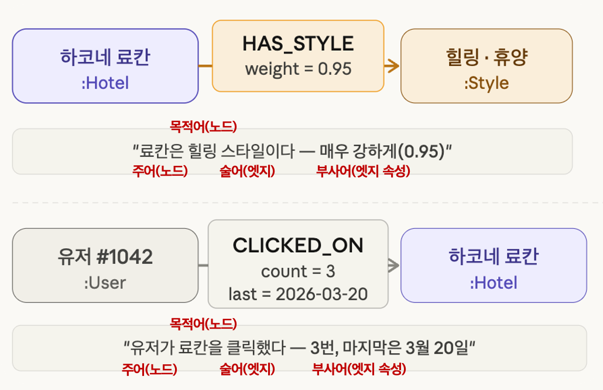
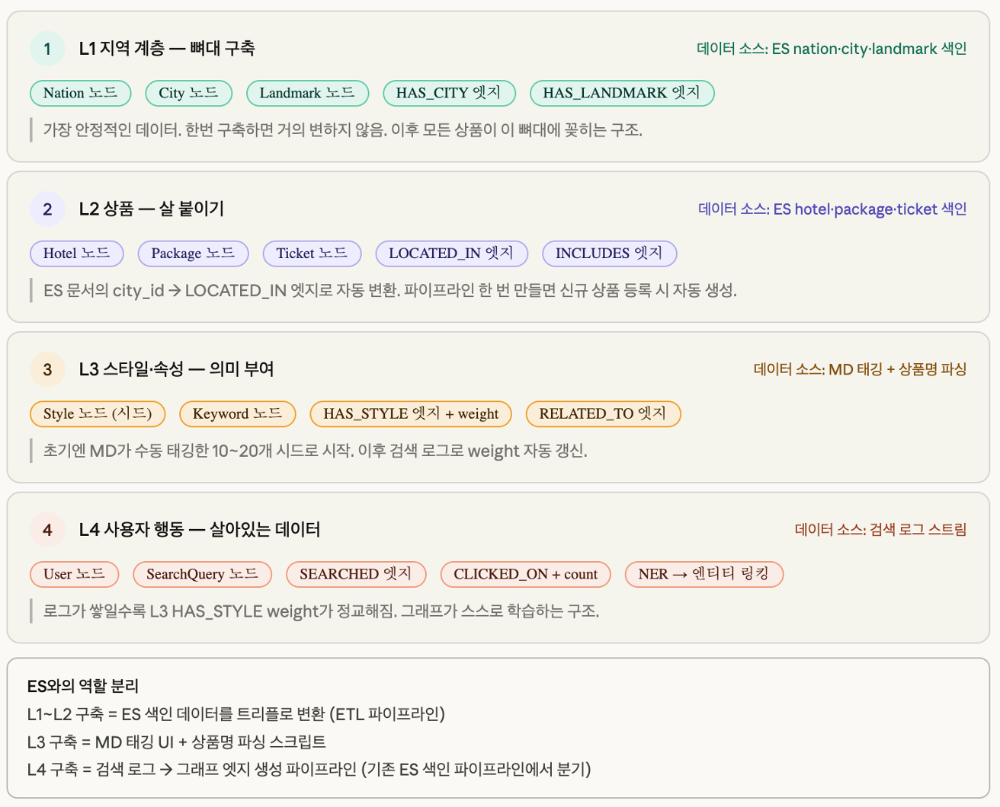
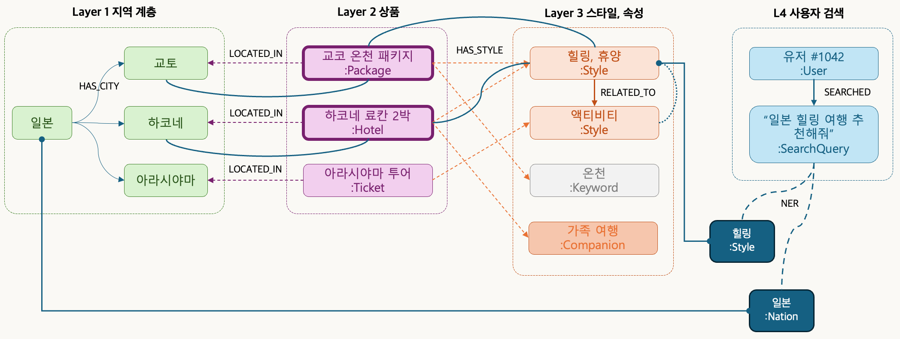

여행 플랫폼 검색 시스템 아키텍처 제안
지식그래프는 모든 데이터를 주어(노드) → 술어(엣지) → 목적어(노드) 형태의 트리플로 표현합니다. 단순한 키-값 저장이 아니라, 관계와 강도까지 함께 저장하는 것이 핵심입니다.
하코네 료칸 →[HAS_STYLE, weight=0.95]→ 힐링·휴양 — 료칸이 힐링 스타일임을 0.95라는 가중치로 표현. 숫자가 클수록 해당 성격이 강합니다.유저 #1042 →[CLICKED_ON, count=3]→ 하코네 료칸 — 유저의 행동 로그도 동일한 트리플로 저장. 클릭 횟수와 마지막 접근일이 엣지 속성으로 기록됩니다.이 구조 덕분에 "힐링 스타일 숙소를 자주 본 유저" 같은 복합 조건을 그래프 탐색 한 번으로 추론할 수 있습니다.

기존 Elasticsearch 색인 데이터를 4개 계층 노드로 재해석해 지식그래프를 구성하는 방안입니다. 새로운 데이터를 수집하는 것이 아니라, 이미 보유한 ES 데이터를 그래프 구조로 재활용하는 것이 핵심입니다.
Nation → City → Landmark 계층 구조. ES의 nation/city/landmark 필드에서 바로 추출 가능합니다.LOCATED_IN·INCLUDES 엣지로 "어느 지역의 어떤 상품"인지 관계를 구성합니다.HAS_STYLE·RELATED_TO 엣지로 연결. MD가 설정한 10~30개 시소러스가 그래프 가중치가 됩니다.SEARCHED·CLICKED_ON 엣지로 저장. NER로 의도를 추출해 그래프 허브에 연결합니다.
사용자가 "일본 힐링 여행 추천해줘"라고 입력하면, 시스템이 어떤 경로로 답변에 도달하는지 보여주는 전체 아키텍처 흐름도입니다.
힐링(:Style), 일본(:Nation) 두 개의 의도 노드를 뽑아냅니다.일본 → 하코네 지역 계층을 타고 내려가고, HAS_STYLE=힐링 엣지를 따라 관련 상품(하코네 료칸 2박 등)을 탐색합니다.힐링·휴양), 키워드(온천), 동반자 유형(가족 여행) 등 풍부한 맥락 정보를 함께 가져옵니다.